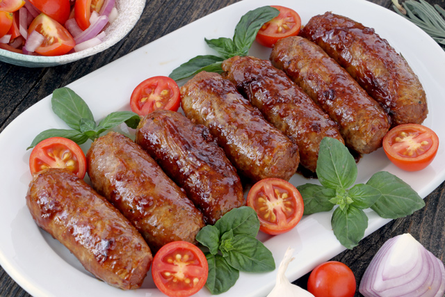

Tupig
Sweet, chewy rice cakes with coconut strips wrapped in charred banana leaves.
Iniruban
Type of rice cake made with burned young sticky rice, coconut milk and sweetene

Kapampangan Longganisa
Sweetened Version of Longganisa

Sisig
Made from pork jowl and ears, pork belly, and chicken liver, which is usually seasoned with calamansi, onions, and chili peppers.